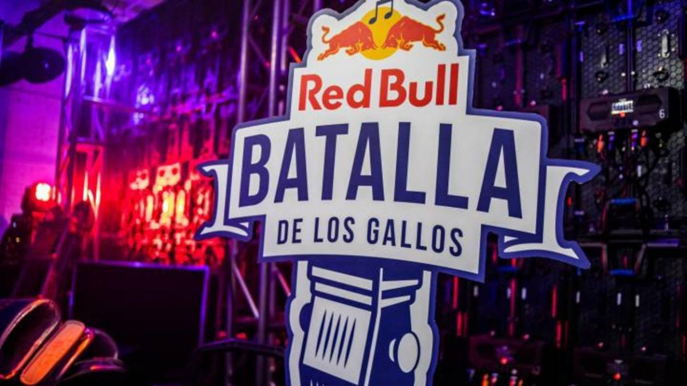
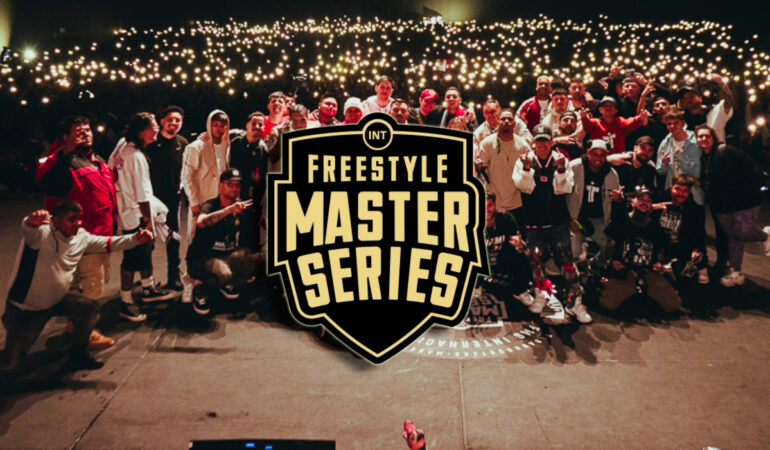
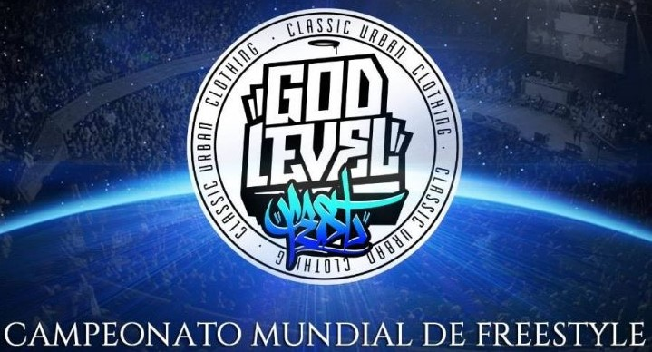

Eventos Internacionales
El freestyle ha trascendido fronteras y se ha convertido en un fenómeno global con competencias de alto nivel que reúnen a los mejores freestylers del mundo. A continuación, exploramos algunos de los eventos internacionales más destacados en la escena del freestyle.
Red Bull Batalla De Gallos Internacional
Descripcion:
La Red Bull Batalla de los Gallos Internacional es la competencia de freestyle más importante a nivel mundial. Los campeones nacionales de diferentes países se enfrentan en esta competencia para disputar el título de mejor freestyler del mundo.
Formato:
Los participantes son los Campeones nacionales de la Red Bull Batalla de los Gallos en diversos países.Rondas, las batallas son de 1 vs 1 con eliminación directa.
Criterios De Evaluacion:
- Fluidez
- Originalidad
- Presencia escenica
Freestyle Master Series (FMS) Internacional
Descripcion
Es una liga que reúne a los mejores freestylers de diferentes países para competir en una serie de eventos a nivel global. Es conocida por su formato de liga y por el alto nivel de los participantes.
Formato
Participantes: Los participantes son Freestylers de las ligas nacionales, el evento es realizado en diferente pais cada año, las batallas son 1 vs 1 con varias rondas y desempates si es necesario.
Criterios De Evaluacion
- Tecnica
- Adaptibilidad
- Creatividad
Gold Level
Descripcion:
Es una competencia internacional que destaca por su formato mixto, combinando batallas escritas con freestyle en vivo. Es conocida por su exigencia y por atraer a algunos de los mejores freestylers del mundo.
Formato:
Freestylers seleccionados para cada evento,con formato de eliminatorias directas con rodas de batallas que incluyen rimas escritas y freestyle en vivo.
Criterios De Evaluacion:
- Flow
- Tecnica
- Punchlines